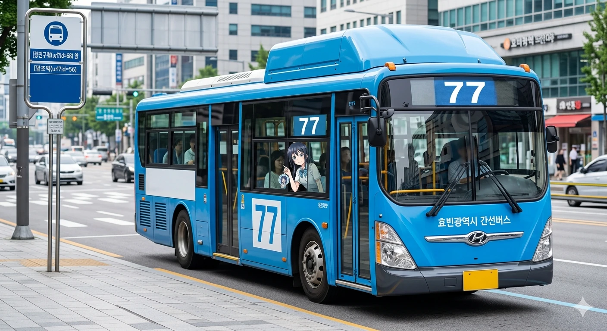

효빈 버스 77은 효빈광역시 창전구 팔조동(팔조역)과 마시동(창전상고)을 잇는 간선버스 노선이다. 창전구 내부를 촘촘하게 연결하는 노선으로, 효빈시 전체 시내버스 승객 수 순위권에 항상 드는 초과밀 노선이다.
 |
| 창전구청 앞을 지나가는 77번 버스 |
| 🚌 효빈 버스 77 | |||||
| 기점 | 창전구 팔조동 (팔조역) | 종점 | 창전구 마시동 (창전상고) | ||
| 종점행 | 첫차 | 04:20 | 기점행 | 첫차 | 04:20 |
| 막차 | 00:33 | 막차 | 00:33 | ||
| 🚌 효빈 버스 77-1 | |||||
| 기점 | 창전구 마시동 (창전상고) | 종점 | 창전구 팔조동 (팔조역) | ||
| 종점행 | 첫차 | 04:26 | 기점행 | 첫차 | 04:26 |
| 막차 | 00:38 | 막차 | 00:38 | ||
창전구 팔조동과 마시동을 잇는 단거리 고수요 노선이다. 팔조역, 칠심, 창전구청, 시로 등 창전구의 핵심 지역을 모두 훑고 지나가며, 1호선, 2호선, 3호선, 5호선과 환승이 가능하다. 출퇴근 시간대에는 가축수송이 일상이며, 이를 해소하기 위해 5분 간격의 빗자루 배차가 이루어지고 있다.